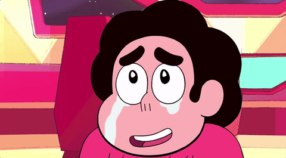

Steven universe é um dos meus desenhos favoritos e, com certeza, o desenho (ou mesmo mídia) que mais mudou a minha vida. Não é só um desenho lindo artisticamente e com músicas e enredo muito bons. Ele traz muitas lições e temas que me ensinaram a ver o mundo de outra forma e a aceitar melhor quem eu sou. Vou falar sobre alguns deles nesse texto.
⭐ Tá tudo bem ser sensível e sentimentos são lindos.
Uma das lições mais importantes é sobre sentimentos. Steven é um menino diferente da maioria dos protagonistas de desenhos até então. Ele é muito sensível e mostram que tudo bem ser assim. Na verdade, a maior força dele é essa. A maioria dos conflitos são resolvidos com ele conseguindo conversar mesmo com quem acabou de machucar ele. E muitos dos antes inimigos, se tornam amigos.
